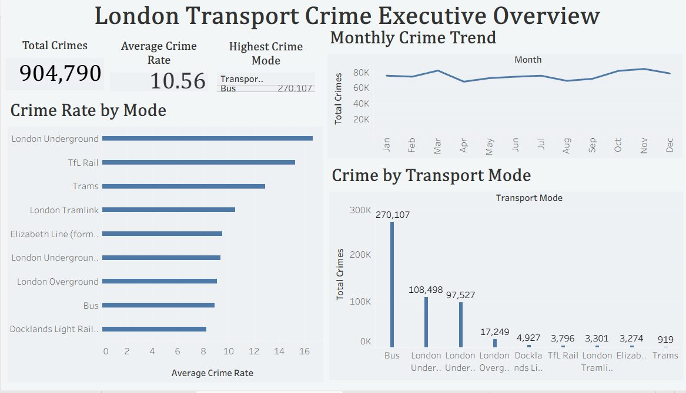
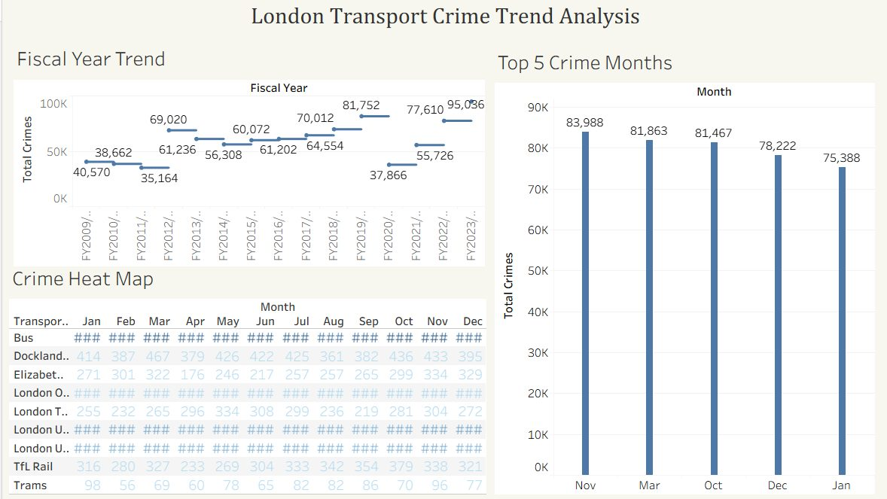
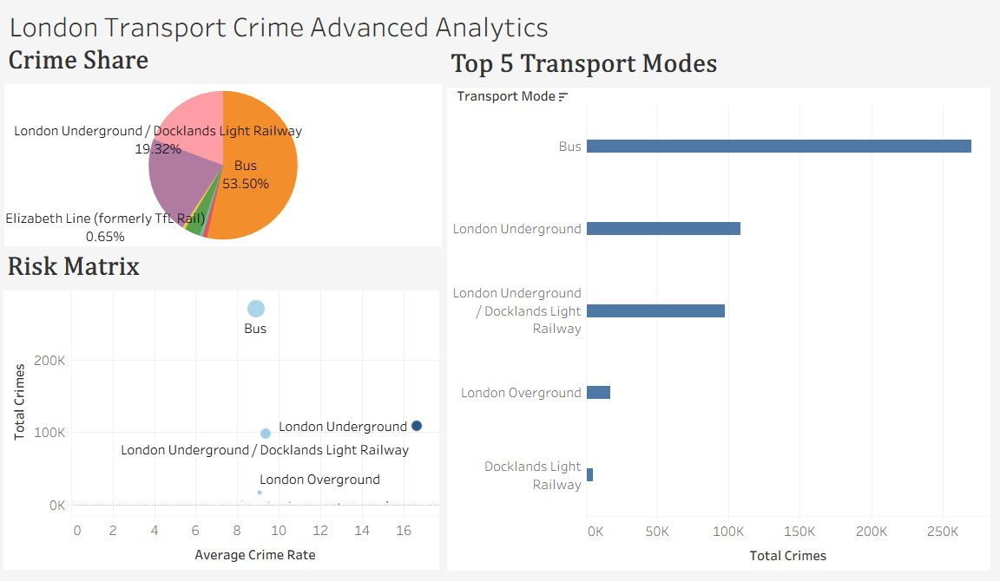

Case study 05
Where does crime concentrate across London's transport network, how has it moved over fifteen fiscal years, and what would that mean for how policing and surveillance resources are allocated?
Three Tableau dashboards built as a drill-down: an executive overview, a trend analysis with a monthly heat map, and an advanced view of mode-level concentration. The deck pairs each dashboard with its findings and closes with resourcing recommendations. TfL deck · exec summary
Bus accounts for 53.5% of reported crimes (270,107 incidents), with London Underground carrying the second-highest volume at 108,498. Crime distribution is concentrated rather than spread evenly across the network. TfL exec summary
The monthly heat map shows recurring patterns year over year, with crime peaking around October and November. The top crime months cluster toward the end of the calendar year. TfL trend dashboard
Crime volume generally increased over the study period, with FY2023/24 recording the highest volume of the fifteen years analyzed. TfL trend dashboard
Weight police presence toward buses during the October and November peak, focus surveillance on the highest-volume Underground routes, and hold a yearly trend review so any intervention's effect is measured against the fifteen-year baseline rather than a single year.


